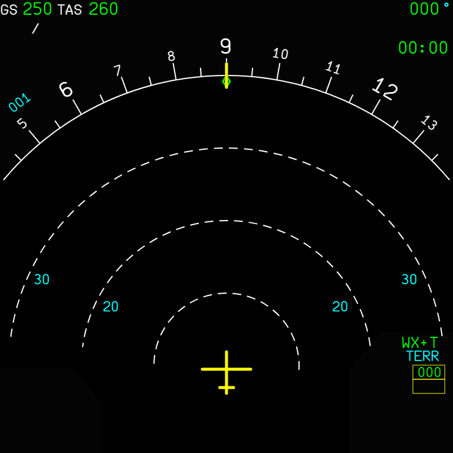
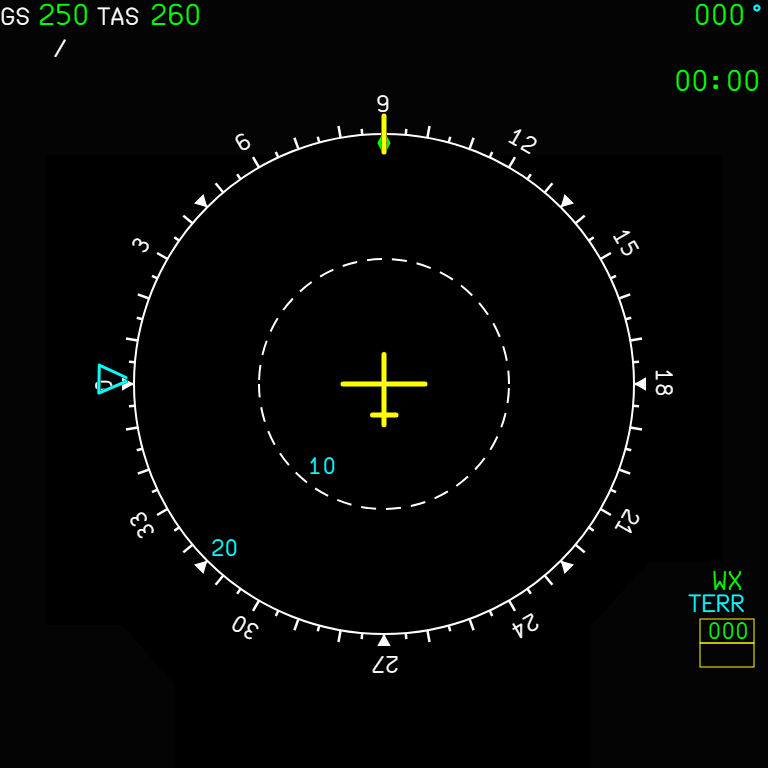

A native weather radar and TERR ON ND terrain display on the NDs of both aircraft, and the terrain and weather on the A380X vertical display, drawn from the MSFS radar and terrain data without SimBridge
AircraftA32NX and A380XWhere to find itNDs (ARC and ROSE pages); A32NX weather radar panel and TERR ON ND pushbutton; A380X EFIS WX / TERR overlay, MFD SURV CONTROLS; A380X VDBranchcore/nd-weather-terrain, based on master (FlyByWire master 255546cb0 merged in); independent. core/display-unit-failures, core/a380x-wxr-controls and core/a380x-vd-runways stack on it.StatusRadar, mode messages and VD tested in the sim over several sessions (September 2026; A380X messages, antenna sweeps, 320 NM limit and ARC bottom by the user 2026-09-24); terrain tested by the user: OK (2026-09-29); parked views and 20 / 10 Hz redraw user-checked in the sim and measured (2026-10-02); OANS mouse fix user-tested (2026-09-27); terrain view resend after parking tested in the sim by the user on develop: OK (2026-10-07).PicturesIn-sim screenshots taken during development (the radar and terrain are drawn by a native WASM gauge, which the browser harness cannot run), and two A32NX NDs from the local browser harness for the mode message. Some A380X radar pictures predate later changes: their captions say so.
1. A32NX weather radar on the ND
2. A380X weather radar on the ND and weather on the VD
3. Weather radar mode and messages on the ND
4. Terrain on the ND (TERR ON ND) and A380X VD terrain
5. Radar, terrain and VD after the A380 and A320 manuals
7. Terrain and radar views get their settings again after a pause
8. A380X: the OANS map takes the mouse through the radar gauges
1. A32NX weather radar on the ND
Aircraft: A32NX | Where: Both NDs; pedestal WX SYS and MODE knobs | Status: Tested in the sim over several sessions and weather presets (September 2026); antenna sweep tested by the user 2026-09-24.
What it is for
The A32NX ND had no working weather radar. A native gauge (ndwxr) now draws the MSFS weather radar on the CPT and F/O NDs, aligned with the range rings, in the colours of an airborne radar.
Figure 1. A32NX ND in ARC with weather ahead: green, yellow and red cells.In-sim screenshot taken during development: not representative of the final in-game UI, reference for the explanation only.Figure 2. Another cell field, ROSE-like forward view.In-sim screenshot taken during development: not representative of the final in-game UI, reference for the explanation only.
Using it
Control
Position
ND
WX SYS knob
SYS 1 / SYS 2
Radar on (system 1 or 2)
OFF
No radar
MODE knob
WX
Precipitation
WX+T
Precipitation and turbulence (magenta)
TURB
Turbulence only
MAP
Ground map from the terrain: black water, green ground, amber mountains
EFIS
ARC or any ROSE page (NAV, ILS, VOR)
Radar shown over the antenna sweep (180 degrees, the forward half); nothing in PLAN
The selected mode is written on the ND (see the feature Weather radar mode and messages on the ND).
Reading the picture
Colour
Rain rate
Meaning
Green
from 0.7 mm/h
Light precipitation
Yellow
from 4 mm/h
Moderate
Red
from 12 mm/h
Heavy: avoid
Magenta
above 20 mm/h, within 40 NM
Turbulence (WX+T, TURB)
The engine's rain rate is noisy pixel by pixel; each level is smoothed, so the picture shows solid areas with crisp edges.
What to expect
Situation
What you should see
On the ground
Drawn as in flight: the radar scans on the ground once it is switched on with a display mode (A320 FCOM DSC-34-SURV-30-30).
Clear sky
No picture (nothing to return).
WX SYS OFF
No picture; WXR OFF in white on the ND.
CPT and F/O NDs
Independent: each ND uses its own IR position (IR 1 CPT, IR 2 F/O, IR 3 by the ATT HDG knob) and its own range and mode; the two knobs are shared.
Limitations and why
Limitation
Why
What to do
Turbulence is a proxy.
MSFS gives no turbulence data; rain above 20 mm/h within 40 NM is drawn magenta.
-
No tilt, no gain.
The MSFS radar has neither.
-
Drawn only with weather around.
The MSFS radar only returns precipitation.
Test with the MSFS weather presets.
How to use
Set the WX SYS knob of the weather radar panel to SYS 1 or SYS 2.
Set the MODE knob: WX (precipitation), WX+T (precipitation and turbulence), TURB (turbulence only) or MAP (ground map).
On the EFIS control panel select ARC or a ROSE mode and a range.
Read the colours (table above); WX SYS OFF takes the radar off.
How to test
#
Do this
Expected result
1
A32NX in flight (or on the ground) with an MSFS weather preset with storms. CPT EFIS: ND ARC, 40 NM. WX SYS SYS 1, MODE WX.
Green, yellow and red cells ahead of the aircraft, aligned with the range rings; WX in green on the right of the ND.
2
MODE WX+T.
Heavy rain (above 20 mm/h) within 40 NM turns magenta; message WX+T.
3
MODE TURB.
Only the magenta areas are left; message TURB.
4
MODE MAP.
A ground map: black water, green ground, amber mountains; message MAP.
5
MODE WX, then ND mode ROSE ILS, ROSE VOR, ROSE NAV, then PLAN.
The radar is shown on every ROSE page (forward half), not in PLAN.
6
Change the F/O ND range only.
The F/O ND redraws at its own range; the CPT ND does not change.
7
WX SYS OFF.
No weather picture; WXR OFF in white on the ND.
8
Select a clear-sky weather preset with WX SYS on.
No picture (nothing to return).
2. A380X weather radar on the ND and weather on the VD
Aircraft: A380X | Where: Both NDs and VDs; EFIS WX overlay; MFD SURV CONTROLS | Status: Tested in the sim (September 2026); 160 degree sweep and 320 NM limit tested by the user 2026-09-24.
What it is for
The A380X ND always showed WXR INOP (both WXR systems were hard-coded as failed) and had no radar picture. It now has the native radar of the A32NX, with the A380 rules, and the VD shows the weather on its vertical cut.
Figure 3. A380X ND with weather cells ahead, and the same cells on the VD below. Development picture: the WX+T label and the hatched off-path areas seen here were removed later; the A380X ND now reads WX.In-sim screenshot taken during development: not representative of the final in-game UI, reference for the explanation only.
Using it
EFIS control panel: select the WX overlay.
MFD SURV CONTROLS: WXR AUTO or OFF, TURB AUTO or OFF, MODE WX or MAP, WX ON VD. These buttons are wired on core/surveillance; with this branch alone the radar runs at their default settings (WXR AUTO, TURB AUTO, MODE WX, WX ON VD AUTO).
The radar is shown when the WXR & TAWS system selected on the SURV panel is not failed. A system is failed only while its AESU is reset or its power is lost (AC ESS for system 1, AC 4 for system 2).
The ND range table is -1 (ZOOM, the airport map) and 10 to 640 NM; the radar is hidden at ZOOM and at 640 NM: "The ND can only display the weather, if the selected range is below, or equal to, 320 nm" (A380 FCOM DSC-31-20-50).
Figure 4. Moderate rain (yellow) over a wide area, with its VD cut. Development picture: the WX+T label and the hatched off-path areas seen here were removed later; the A380X ND now reads WX.In-sim screenshot taken during development: not representative of the final in-game UI, reference for the explanation only.Figure 5. TURB on: heavy rain drawn magenta (turbulence proxy). Development picture: the WX+T label and the hatched off-path areas seen here were removed later; the A380X ND now reads WX.In-sim screenshot taken during development: not representative of the final in-game UI, reference for the explanation only.
Weather on the VD
WX ON VD (SURV CONTROLS) shows the weather on the VD, along the same cut as the terrain (see Radar, terrain and VD after the A380 and A320 manuals).
Cells are drawn green and yellow with a red core; no magenta: the real VD does not display turbulence (FCOM DSC-31-20-40-10).
Heights are placed on the ADR baro-corrected altitude, like the VD's aircraft symbol.
Limitations and why
Limitation
Why
What to do
The VD weather is stylised.
The vertical MapView of MSFS is a single thin beam (tilting it crashes the gauge); the VD picture is built from the ND radar views.
-
PRED W/S and GAIN are not drawn.
The MSFS radar has no predictive windshear or gain.
-
No TURB-only mode.
The A380 has none: TURB off gives WX, on gives WX+T.
-
Antenna sweep
The picture covers the real antenna sweep of the A380's Honeywell RDR-4000: 160 degrees (80 degrees each side of the nose; Honeywell IntuVue white paper). The real display fills up to 90 degrees from the radar's memory, which the MSFS radar does not have, so nothing is painted beside and behind the aircraft there.
How to use
On the EFIS control panel select the WX overlay, the ARC or a ROSE mode and a range of 10 to 320 NM.
With core/surveillance: set the WXR block of MFD SURV > CONTROLS (WXR, TURB, MODE, WX ON VD). Without it the radar runs at the default settings.
Read the weather on the ND and its vertical cut on the VD below.
How to test
#
Do this
Expected result
1
A380X in flight with an MSFS storm preset. CPT EFIS: WX overlay, ND ARC 40 NM.
Green, yellow and red cells over the 160 degree sweep; WX in green on the right of the ND.
2
Look at the VD under the ND.
The cells on the flight path drawn as green and yellow columns with a red core at the aircraft level; no magenta on the VD.
3
ND range 640 NM, then the smallest range (ZOOM).
No weather at 640 NM (the terrain, if selected, is still drawn); none at ZOOM. Back to 320 NM: the weather comes back.
4
With core/surveillance: MFD SURV > CONTROLS, TURB OFF.
No more magenta on the ND; the message stays WX.
5
With core/surveillance: MODE MAP.
Ground map on the ND; message MAP.
6
With core/surveillance: WX ON VD OFF.
The VD weather goes; the ND keeps it.
7
Deselect the WX overlay.
No weather on the ND, no radar message.
3. Weather radar mode and messages on the ND
Aircraft: A32NX and A380X | Where: ND, right side above the TERR box | Status: Tested in the sim (September 2026); A380X WX / MAP / WXR OFF messages tested by the user 2026-09-24.
What it is for
Nothing on the ND told the crew which radar mode was selected. The mode now appears in green on the right of the ARC and ROSE pages while the radar is selected, as on the real ND. The A32NX shows the Honeywell list of the A320 FCOM (DSC-34-SURV-30-30); the A380X shows the A380's own WXR messages (A380 FCOM DSC-34-20-30-20 "WXR MESSAGES"): WX for the WX display function whatever the TURB button, MAP, WXR OFF.
ND message
A32NX (MODE knob)
A380X (SURV CONTROLS)
WX (green)
WX
WX display function, whatever the TURB button
WX+T (green)
WX+T
-- (not an A380 message)
TURB (green)
TURB
-- (no TURB-only mode on the A380)
MAP (green)
MAP
MODE MAP
WXR OFF (white)
WX SYS OFF
WXR button OFF
(none)
-
no WX overlay on the EFIS panel, or the WXR & TAWS system failed

Figure 6. A32NX ARC: WX+T above the TERR box.

Figure 7. A32NX ROSE NAV: WX.
Shown on the ARC and ROSE pages (NAV, ILS, VOR), not in PLAN, and not while the terrain replaces the weather (TERR ON ND).
Shown on the ground too, where the radar also scans.
The native radar gauge decides and publishes the label (A32NX_WXR_ND_{L,R}_MODE), so the ND follows exactly what the gauge draws.
Limitations and why
Limitation
Why
What to do
No label in PLAN.
The radar is not shown in PLAN.
-
How to use
Nothing to set: the message follows the radar selection (A32NX MODE knob; A380X WX overlay and SURV CONTROLS).
Check the message on the right of the ND, above the TERR box, after each radar change.
How to test
#
Do this
Expected result
1
A32NX, ND ARC: WX SYS SYS 1, turn the MODE knob through WX, WX+T, TURB, MAP.
The message follows in green: WX, WX+T, TURB, MAP.
2
A32NX: WX SYS OFF.
WXR OFF in white.
3
A32NX: press TERR ON ND.
The radar message goes while the terrain replaces the weather.
A380X with core/surveillance: MODE MAP, then WXR OFF on the SURV CONTROLS page.
MAP in green, then WXR OFF in white.
6
Either aircraft: ND mode PLAN.
No radar message.
4. Terrain on the ND (TERR ON ND) and A380X VD terrain
Aircraft: A32NX and A380X | Where: A32NX TERR ON ND pushbutton; A380X EFIS TERR overlay; A380X VD | Status: Tested in the sim by the user: OK (2026-09-29).
What it is for
TERR ON ND needed SimBridge. The native gauge now draws it from MSFS's own terrain, with the EGPWS colours, on every map page but PLAN, also on the ground.
Figure 8. A380X at Aspen, 10 NM: terrain far above the aircraft in red, close in yellow, below in green; the VD terrain profile in brown.In-sim screenshot taken during development: not representative of the final in-game UI, reference for the explanation only.Figure 9. The same place at 160 NM.In-sim screenshot taken during development: not representative of the final in-game UI, reference for the explanation only.
Reading the colours
Terrain relative to the aircraft
Colour
More than 2000 ft above
Dense red
1000 to 2000 ft above
Dense yellow
500 ft below (250 ft gear down) to 1000 ft above
Medium yellow
Down to 1000 ft below (500 ft gear down)
Dense green
1000 to 2000 ft below
Light green
More than 2000 ft below
Nothing
Water
Cyan-blue dots
The dots are a random stipple, as on the real display. The map turns with the ND's heading; ARC shows the forward half, the ROSE modes the whole disk.
A380X vertical display
Figure 10. The A380X VD terrain profile (brown), water in cyan from sea level down.In-sim screenshot taken during development: not representative of the final in-game UI, reference for the explanation only.
Needs the TERR SYS button of the SURV page not OFF (otherwise NO TERR DATA AVAILABLE).
The cut follows the flight plan or the track (see Radar, terrain and VD after the A380 and A320 manuals).
The peaks box
The TERR box with the highest and lowest elevations of the range needs real elevations, which a gauge cannot read from MSFS: its figures come from SimBridge when it runs. Without SimBridge the box stays empty and the terrain is drawn as usual.
Limitations and why
Limitation
Why
What to do
At most 8 map views per module.
MSFS crashes a 9th; the A380X switches its views between weather and terrain.
-
Peaks box only with SimBridge.
No elevation readback from MSFS.
Run SimBridge.
Terrain far above the range top is shown red.
MSFS does not clamp to the first colour entry.
-
Peaks mode (with SimBridge)
When the SimBridge figures say that the highest terrain of the range is more than 2000 ft below the aircraft, the terrain is drawn in green by its elevation within the range: solid for the top 5 %, dense dots down to 65 %, light dots down to 35 %, nothing lower. Without SimBridge the standard colours above apply.
Other details
When descending faster than 1000 ft/min, the colours use the altitude expected in 30 s (A320 FCOM DSC-31-45).
The old terronnd gauge (SimBridge's own terrain picture) is no longer loaded: SimBridge is only used for the peaks box figures. The A32NX systems host now posts the aircraft status to SimBridge itself.
How to use
A32NX: press the TERR ON ND pushbutton of the side wanted (ND in ARC or ROSE).
A380X: select the TERR overlay on the EFIS control panel; keep the TERR SYS of the SURV page not OFF for the VD profile.
Optional: run SimBridge for the peaks box figures and the peaks mode.
How to test
#
Do this
Expected result
1
A32NX or A380X on the ground at a mountain airport (for example KASE, Aspen). ND ARC 10 NM. Press TERR ON ND (A380X: TERR overlay).
Terrain far above the aircraft in red, close above in yellow, below in green; lakes as cyan-blue dots; the radar message goes.
2
Range 160 NM.
The same colour logic over the wider area; the map turns with the heading.
3
ND mode PLAN.
No terrain.
4
A380X: look at the VD.
Brown terrain profile along the flight plan or the track, water in teal.
5
A380X: set the TERR SYS button of the SURV page to OFF.
VD: NO TERR DATA AVAILABLE.
6
Start SimBridge and wait a few seconds.
The TERR box shows the highest and lowest elevations of the range.
7
Without SimBridge.
The TERR box stays empty; the terrain is drawn as before.
5. Radar, terrain and VD after the A380 and A320 manuals
Aircraft: A380X (VD) and both aircraft (weather picture) | Where: A380X VD; both NDs with the radar | Status: Tested in the sim (September 2026).
The vertical cut (A380X VD)
In the managed lateral modes the VD shows the terrain and weather along the flight plan (a 200 NM window from just behind the aircraft, with the turns); in the selected modes along the track (FCOM: VIEW ALONG ACFT TRK). More than 5 NM off the plan: the track.
The terrain is the highest across a width of 2 × RNP (1 NM terminal, 2 NM en route above 18 000 ft).
The grey area starts at the next track change of more than 3° (the VD no longer matches the ND beyond it).
The VD scale and the terrain height
With a trajectory, the highest of the aircraft and the path sits at three quarters of the window: in cruise the ground stays on the plot, as on the real aircraft at FL400.
The gap under the aircraft symbol is the true height, whatever the altimeter setting (FCOM / FCTM).
Water in the ND teal; no magenta on the VD; no VD weather when TERR is not available.
Figure 11. A380X VD with the terrain profile and water (in-sim).In-sim screenshot taken during development: not representative of the final in-game UI, reference for the explanation only.
The weather picture (both aircraft)
The radar scans and draws on the ground too (A320 FCOM DSC-34-SURV-30-30: "on the ground, the radar is scanning when the flight crew sets one radar to ON and selects a display mode").
MAP mode is a ground map from the terrain.
The picture builds up over 30 s after the radar starts, sweeping left to right (A380 FCOM).
The ARC picture keeps the ND bottom corners free and stops just above the TCAS / WXR message box, as on the real display.
Figure 12. Just after WX is selected: the picture is building up.In-sim screenshot taken during development: not representative of the final in-game UI, reference for the explanation only.Figure 13. A few seconds later.In-sim screenshot taken during development: not representative of the final in-game UI, reference for the explanation only.
Limitations and why
Limitation
Why
What to do
No A380 AUTO off-path display.
MSFS runs one radar per aircraft; a third view changed what the beam views delivered, so it was removed.
-
How to use
Nothing to set: the VD cut follows the lateral mode (managed: the flight plan; selected: the track).
After switching the radar on, allow 30 s for the picture to build up.
How to test
#
Do this
Expected result
1
A380X in flight in NAV mode with a flight plan that turns ahead, WX and terrain around.
The VD terrain and weather follow the flight plan; the grey area starts at the next track change of more than 3 degrees.
2
Select a heading (HDG mode).
The VD follows the track.
3
Cruise at a high level (for example FL380) over land.
The ground stays on the VD plot (not cut off at the bottom).
4
Either aircraft: switch the radar off, then on (A32NX WX SYS; A380X WX overlay).
The picture builds up over about 30 s, sweeping left to right.
5
ND ARC with weather or terrain.
The picture stops just above the TCAS / WXR message box; both bottom corners stay clear.
Aircraft: A32NX and A380X | Where: NDs and A380X VDs (no control) | Status: Tested in the sim by the user (2026-10-02): same picture on the NDs and the VD; measured with PresentMon.
What it is for
The radar and terrain gauge uses up to eight MSFS map views per aircraft, and the sim renders every visible view each frame, drawn or not. On the A380X this cost frame rate and caused stutters.
A view nothing has shown for 120 frames is now paused (made invisible). It is woken up with a 60-frame warm-up before it is drawn again. With WX and TERR off, in PLAN or with the ND unpowered, no view renders at all.
The ND picture is redrawn at 20 Hz and the VD terrain at 10 Hz instead of every frame, and at once when what the display shows changes (page, range, WX / TERR selection). The first radar sweep is still drawn every frame. At 20 Hz a 3 degree/s turn moves the picture by less than one pixel per step.
What you should see
A380X in cruise, WX on, ARC 40 NM (PresentMon, 2 x 120 s)
Before
Views paused
+ 20/10 Hz
Average FPS
86-90
93-94
95-101
1 % low FPS
18-22
28-30
28-32
Stutters over 50 ms per 120 s
20-30
2-5
-
The A32NX never had the problem (its result is neutral). The picture itself is the same.
Limitations and why
Limitation
Why
What to do
A paused view needs about 1 s to come back.
The 60-frame warm-up lets the sim render the view again before it is drawn (no white flash).
Normal: switching WX / TERR already took about a second on the A380X.
How to use
Nothing to set.
How to test
#
Do this
Expected result
1
A380X in cruise, WX overlay on, ND ARC 40 NM with weather around. Fly a turn.
The weather picture turns smoothly with the ND, no stepping.
2
Change the range and the ND mode a few times.
The picture redraws at once at each change.
3
Switch from WX to TERR and back after a few seconds.
The picture comes back after about a second, without a white square or flash.
4
Watch the VD.
Terrain and weather follow as before.
5
Optional: compare the frame rate with an earlier build (WX on, ARC 40 NM).
Fewer stutters and a higher 1 % low frame rate.
7. Terrain and radar views get their settings again after a pause
Aircraft: A380X (seen there) and A32NX (same gauge) | Where: NDs and A380X VDs (no control) | Status: Tested in the sim by the user on develop: OK (2026-10-07): both VDs identical with the same ND mode and range. Native test view_park_test (ndwxr).
What it is for
On 2026-10-07 the A380X F/O VD showed a terrain profile (flat blocks) that the CPT VD did not, with the same inputs. The gauge pauses the map views nothing shows (previous feature) and wakes them up when needed. It is not known whether the sim keeps a view's settings while it is paused, and a setting the sim ignored was never sent again, since the gauge only sent changes. As a safeguard:
A view that wakes up gets its whole setup again (terrain, radar, VD view, each by its role).
The view radius (the range) is sent on a change, after a wake-up, when the sim time goes back, and again every second while the view is in use, not only on a change.
What you should see
Situation
What you should see
CPT and F/O ND with the same mode and range, terrain shown
The two VD terrain profiles are identical.
A view woken up after a pause (WX / TERR switched, page or range changed)
The right terrain zoom and picture, as on the other side.
Limitations and why
Limitation
Why
What to do
The cause is a likely one, not a proven one.
The F/O stale terrain view zoom was cured by the resend (user test 2026-10-07); whether the sim drops settings of a paused view is still not known.
-
How to use
Nothing to set.
How to test
#
Do this
Expected result
1
A380X powered, CPT and F/O EFIS: TERR overlay, the same ND mode (e.g. ARC) and range on both sides. Compare the two VDs.
Identical terrain profiles; no flat blocks on one side only.
2
On the F/O side switch TERR off and on again, change the range and come back.
The F/O VD and ND come back with the same terrain as the CPT side at the same range.
3
Reload the flight (the sim time goes back) and compare again.
Both sides identical.
8. A380X: the OANS map takes the mouse through the radar gauges
Aircraft: A380X | Where: ND, OANS airport map (ZOOM range) | Status: Tested in the sim by the user: OK (2026-09-27): OANS drag and BTV runway / exit clicks.
What it is for
The radar and terrain gauges sit over the ND and caught every mouse event on the map area: the OANS airport map could not be dragged and its runway and exit labels could not be clicked (BTV selection). The gauges only draw, so they no longer take the mouse.
How to use
Select the ND ZOOM range to show the OANS airport map (stock FBW OANS, needs its airport data).
Drag the map with the mouse or the KCCU cursor, click runway and exit labels as usual.
How to test
#
Do this
Expected result
1
A380X on the ground at an airport with OANS data, ND ZOOM range. Drag the map.